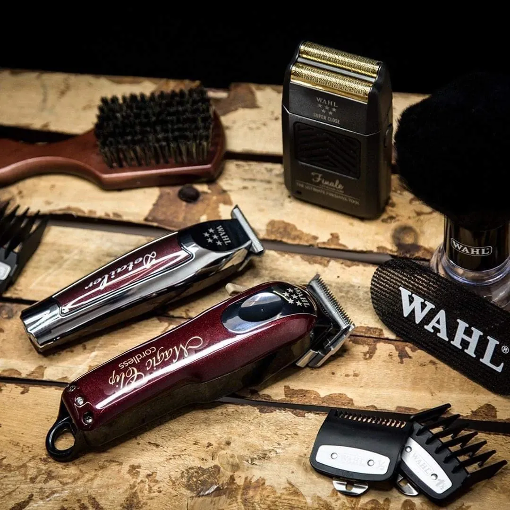
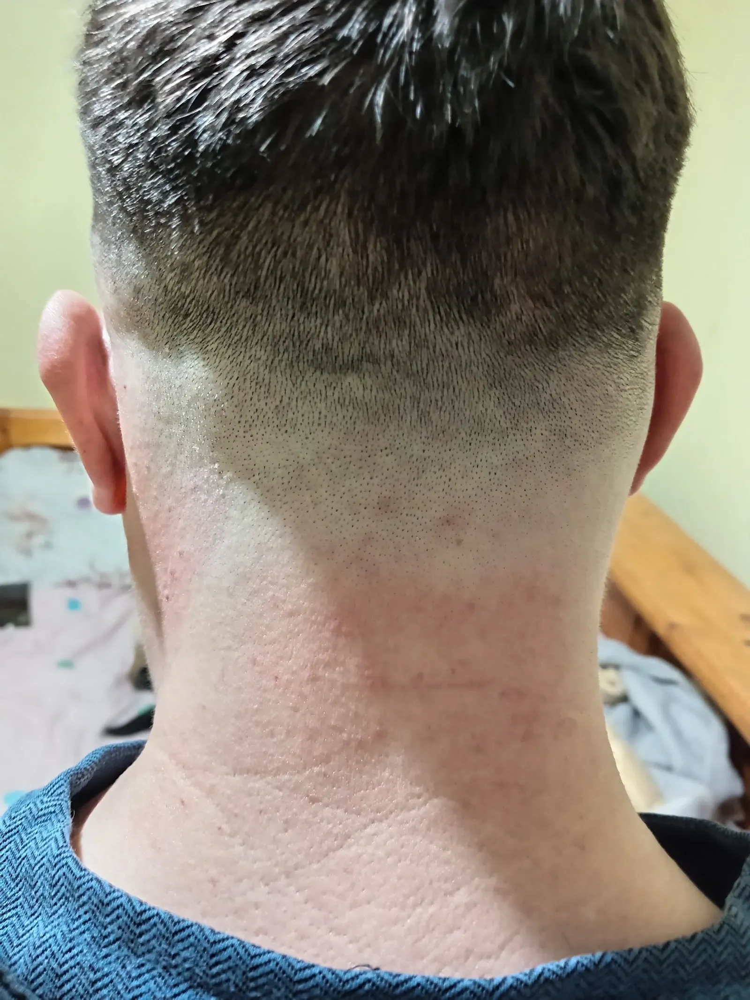
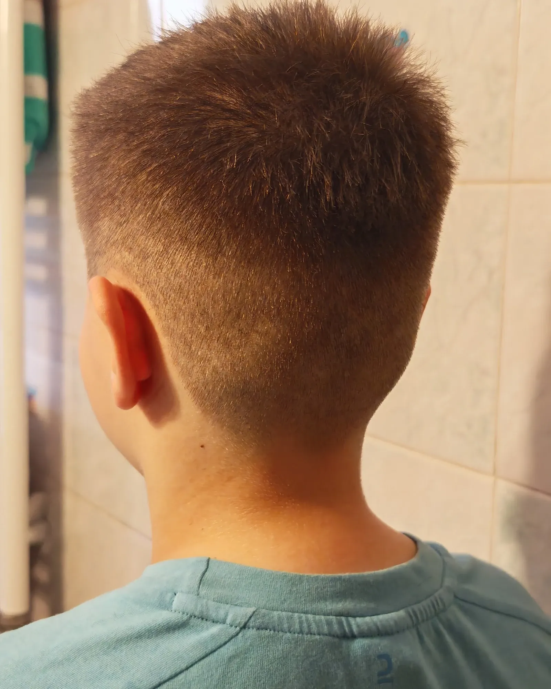
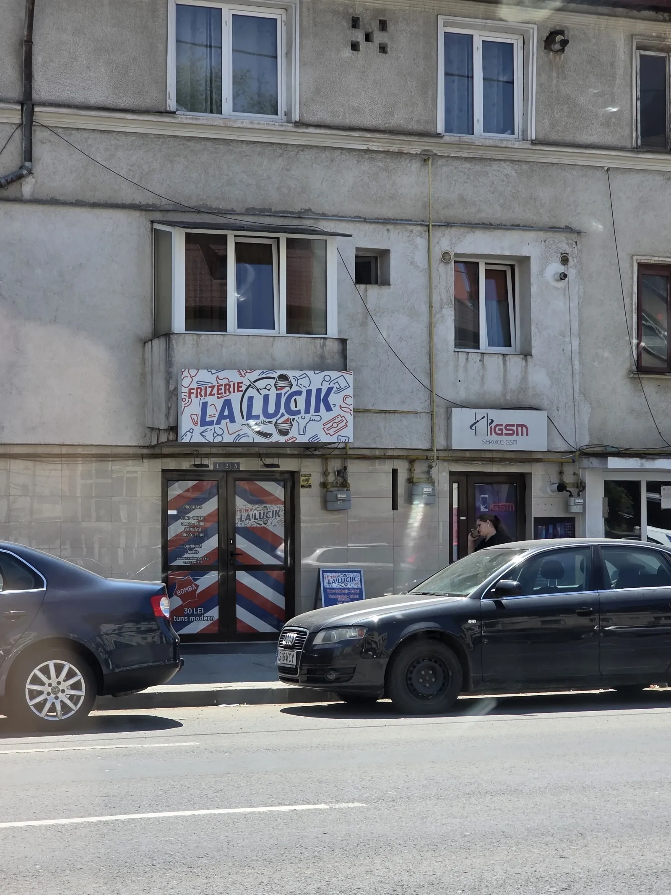
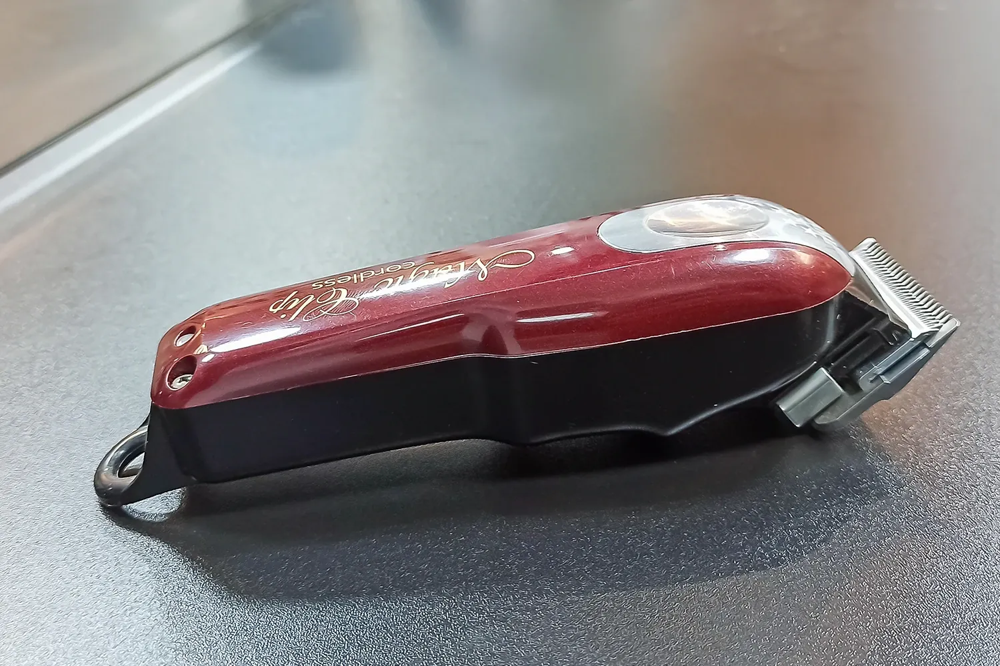
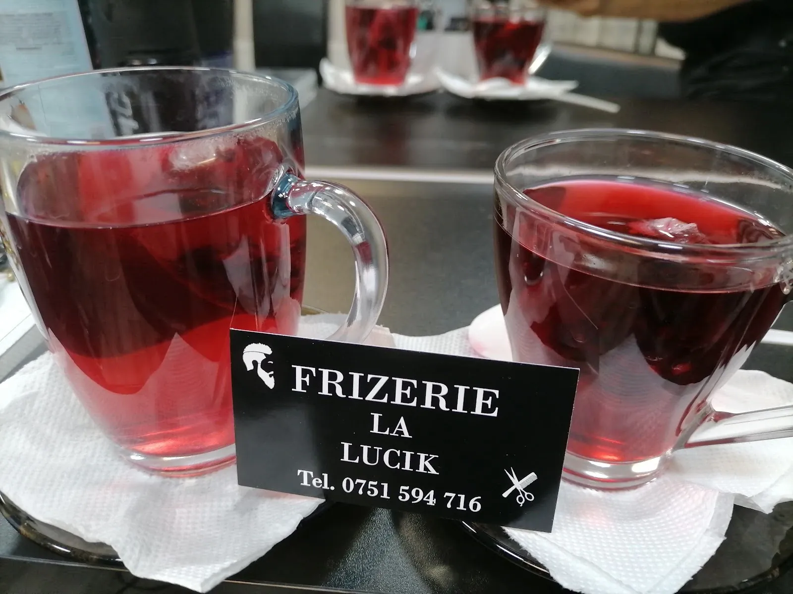
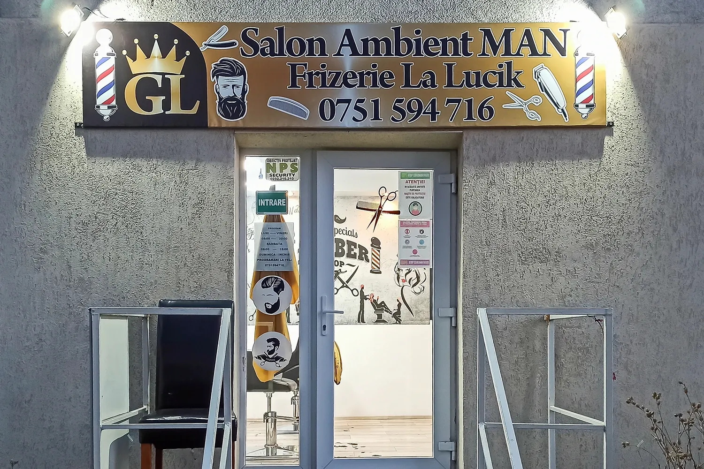
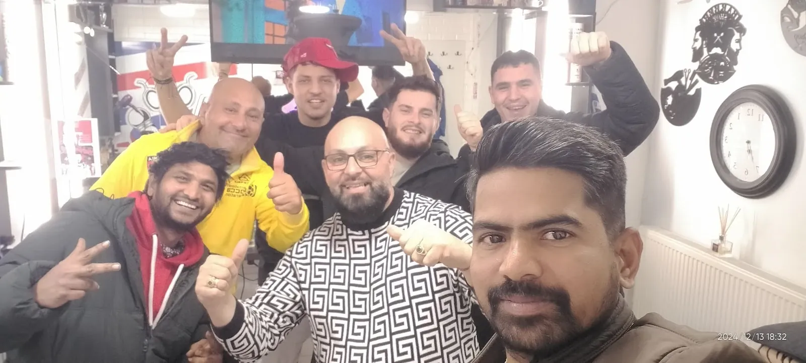

{{Frizerie · Strada Păcurari 125 · Iași|Barbershop · Strada Păcurari 125 · Iași|Barbearia · Strada Păcurari 125 · Iași}}
{{Intri.|Walk in.|Entras.}}{{Te așezi.|Sit down.|Sentas-te.}}{{Ieși tuns.|Walk out cut.|Sais cortado.}}
{{Frizerie de cartier în Păcurari: tuns cu mașina și foarfeca, fade, barbă. Alegi lungimea pe pieptenele de mai jos și știi din prima ce ceri.|A neighbourhood barbershop in Păcurari: clipper and scissor cuts, fades, beards. Pick your length on the comb below and know exactly what you’re asking for.|Barbearia de bairro em Păcurari: corte à máquina e à tesoura, fade, barba. Escolhe o comprimento no pente abaixo e sabes logo o que pedir.}}
4,4{{59 de recenzii pe Google|59 Google reviews|59 avaliações no Google}}


{{prețurile de pe afiș|prices from the sign|preços do cartaz}}
{{Simplu: tuns, barbă.|Simple: cut, beard.|Simples: corte, barba.}}
Frizerie La Lucik
{{Prețurile sunt cele de pe ușa și panoul de la intrare. Le confirmăm cu frizeria înainte de lansarea site-ului.|Prices are the ones on the door and the board outside. To be confirmed with the shop before the site goes live.|Os preços são os da porta e do painel da entrada. A confirmar com a barbearia antes de o site ir para o ar.}}

{{salonul|the shop|a barbearia}}
{{Păcurari 125, ușa cu dungi.|Păcurari 125, the striped door.|Păcurari 125, a porta às riscas.}}
{{O găsești după ușa roșu-alb-albastru, ca stâlpul de frizerie. Înăuntru: mașini Wahl, gărzi de la #1 la #8 și ceai pe tejghea.|You’ll spot it by the red-white-blue door, like a barber’s pole. Inside: Wahl clippers, guards from #1 to #8 and tea on the counter.|Reconhece-se pela porta vermelha, branca e azul, como o poste de barbeiro. Lá dentro: máquinas Wahl, pentes-guia do #1 ao #8 e chá no balcão.}}





{{„Preț mic, te ia imediat, fără programare.”|“Low price, they take you straight away, no booking.”|«Preço baixo, atendem logo, sem marcação.»}}
{{programare|booking|marcação}}
{{Cere o oră.|Ask for a slot.|Pede uma hora.}}
{{Alegi serviciul, ziua și ora; cererea pleacă de pe telefonul tău, pe WhatsApp sau SMS. Frizeria îți confirmă ora.|Pick the service, day and time; the request goes from your phone by WhatsApp or SMS. The shop confirms the time.|Escolhes o serviço, o dia e a hora; o pedido sai do teu telemóvel por WhatsApp ou SMS. A barbearia confirma a hora.}}
{{Mulți clienți vin direct, fără programare. Cererea e pentru când vrei să știi sigur că te așteaptă scaunul.|Plenty of customers just walk in. The request is for when you want to be sure a chair is waiting.|Muitos clientes vêm sem marcação. O pedido serve para quando queres ter a certeza de que a cadeira está à tua espera.}}
{{unde și când|where and when|onde e quando}}
{{Program și adresă|Hours and address|Horário e morada}}
| {{Luni|Monday|Segunda}} | 08:00–18:00 |
|---|---|
| {{Marți|Tuesday|Terça}} | 08:00–18:00 |
| {{Miercuri|Wednesday|Quarta}} | 08:00–18:00 |
| {{Joi|Thursday|Quinta}} | 08:00–18:00 |
| {{Vineri|Friday|Sexta}} | 08:00–18:00 |
| {{Sâmbătă|Saturday|Sábado}} | 08:00–15:00 |
| {{Duminică|Sunday|Domingo}} | {{închis|closed|fechado}} |
- {{Adresă|Address|Morada}}Strada Păcurari 125, 700511 Iași
- {{Telefon|Phone|Telefone}}0751 594 716
- Facebook{{pagina frizeriei: link de confirmat|the shop’s page: link to confirm|página da barbearia: link a confirmar}}
{{Harta se încarcă doar când o ceri.|The map only loads when you ask for it.|O mapa só carrega quando a pedir.}}
{{Deschide în Google Maps|Open in Google Maps|Abrir no Google Maps}}
{{Cod Plus: 5HF4+FQ Iași|Plus Code: 5HF4+FQ Iași|Plus Code: 5HF4+FQ Iași}}